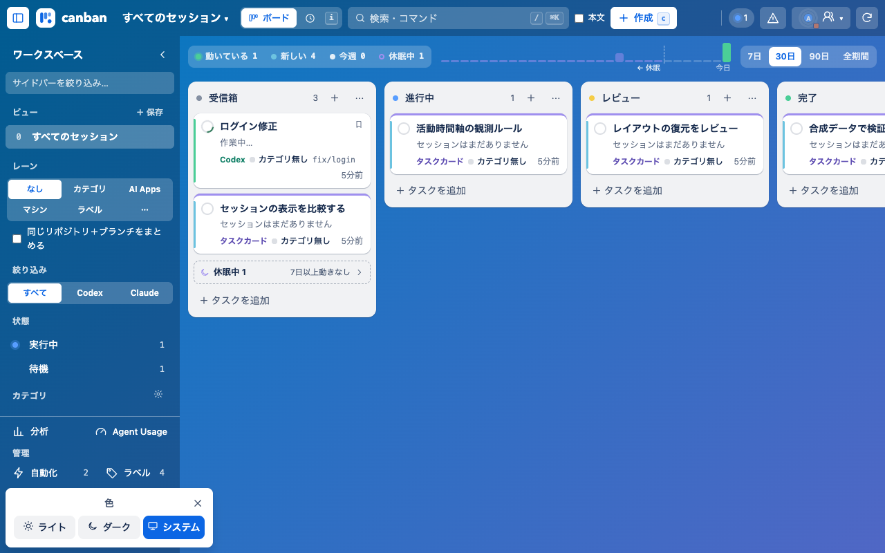
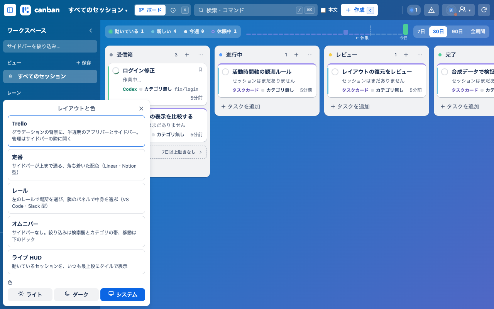

<!doctype html>
<html lang="ja"><meta charset="utf-8"><meta name="viewport" content="width=device-width,initial-scale=1">
<title>Canban レイアウト復元の比較</title>
<style>
body{margin:0;font:16px/1.5 system-ui,sans-serif;color:#172b4d;background:#f1f2f4}
main{display:grid;grid-template-columns:repeat(2,minmax(0,1fr))}
figure{margin:0;min-width:0}figcaption{height:64px;box-sizing:border-box;padding:10px 16px;background:white;border-bottom:1px solid #d8dfe8}
strong{display:block}small{color:#44546f}img{display:block;width:100%;height:auto}
@media(max-width:800px){main{grid-template-columns:1fr}}
</style>
<main>
<figure><figcaption><strong>復元前 — 0.26.4</strong><small>同じ合成データ・1280×800。「色」の3択だけ。</small></figcaption></figure>
<figure><figcaption><strong>復元後 — 0.26.5</strong><small>同じ合成データ・1280×800。5つの配置と色を選択。</small></figcaption></figure>
</main></html>
